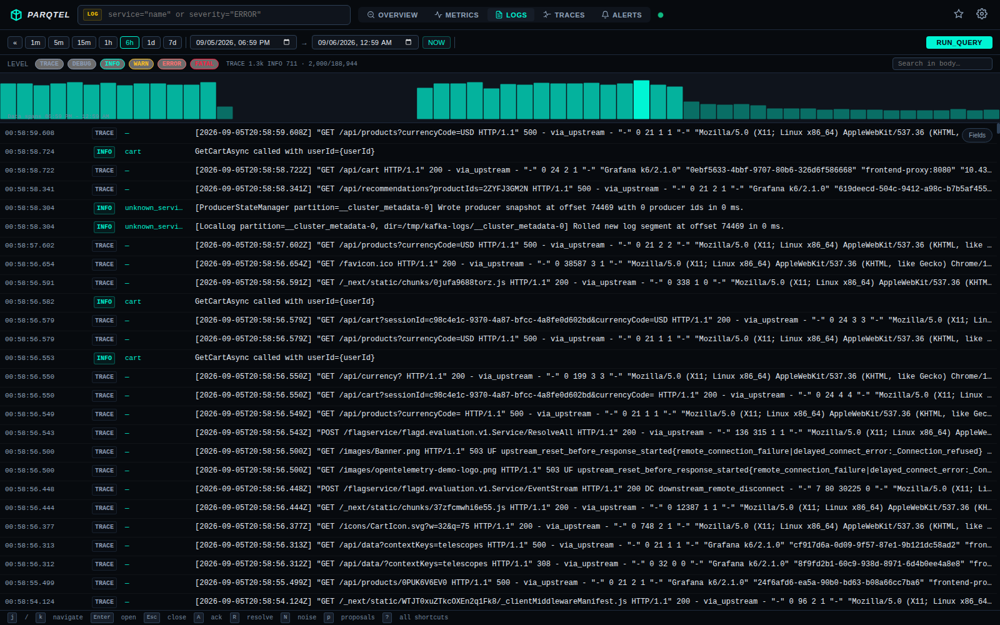
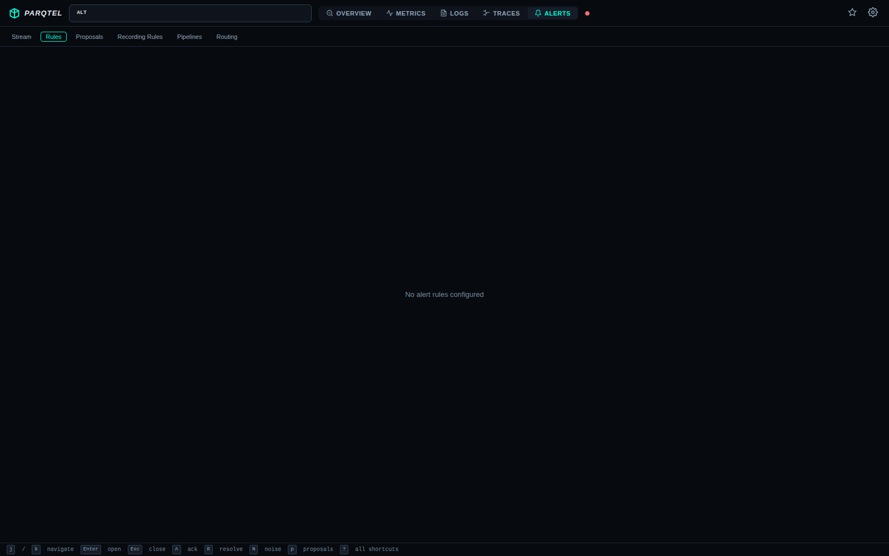

Visualise Telemetry#
Parqtel ships a built-in web console and speaks enough of the Prometheus and Grafana protocols that you can keep the dashboards you already have. This guide covers both: the embedded console for quick investigation, and Grafana for long-lived dashboards.
Two ways to visualise#
| Built-in console | Grafana | |
|---|---|---|
| Setup | None — served from the same binary | Add a datasource |
| Best for | Quick investigation, log and trace browsing, alert triage | Shared team dashboards, long-term panels |
| Works air-gapped | ✅ Yes | Depends on your Grafana install |
| Separate deployment | None | Yes |
Prerequisites#
| Requirement | Detail |
|---|---|
| Parqtel running | See the Quickstart. |
| Data ingested | Some telemetry to display — see Ingest Telemetry. |
| For Grafana | Grafana 8.0 or later, reachable from your browser. |
Part 1 — The built-in console#
The console is served from the same binary at /ui. There is no separate frontend to deploy, no build step, and it works air-gapped.
http://localhost:8080/uiConsole screens#
Overview#
Stat cards, storage and 6-hour ingest volume charts, and live per-signal rate cards with spike and gap sparklines plus wire bytes per second. This is the first place to look when you want to know whether Parqtel is actually receiving data.

Metrics#
A guided query editor that switches between Builder and Code modes. The Builder gives you dropdowns for metric names and labels; Code lets you type PromQL directly, with autocomplete.

Use Code mode when you want to paste a query from a runbook or an alert rule straight into the console.
Logs#
Severity filtering and full-text search over Parquet-backed logs, with field facets for fast narrowing.

Search syntax uses the ParqtelQL grammar (query is required; start/end are supplied by the console):
severity>=ERROR
severity>=ERROR body:/timeout/
service.name="checkout" -severity:DEBUG
status:>=500 duration>100Traces#
A trace-grouped browse list with a waterfall view showing span timing, and cross-signal correlation so you can jump from a slow span to the logs emitted during it.

Alerts#
Live firing alerts with severity chips and an Evidence tab that shows the query and samples that caused the alert to fire.

Alert rules#
Rule management, plus the routing and silence views.

See Alerting for how to write the rules themselves.
Deep links#
Console URLs are deep-linkable, so you can paste a specific query into a ticket or a chat thread and have a colleague open exactly what you were looking at.
Run it yourself#
docker run -d --name parqtel \
-p 8080:8080 -p 4317:4317 \
-v parqtel_data:/data \
ghcr.io/parqtel/parqtel-oss:0.3.1
# → http://localhost:8080/uiPart 2 — Grafana#
Parqtel speaks the Grafana SimpleJSON protocol. SimpleJSON is a datasource plugin, not a Grafana built-in — install it first:
grafana-cli plugins install grafana-simple-json-datasource
# then restart GrafanaGrafana's newer Infinity datasource can also reach these endpoints if you prefer it.
Step 1 — Add the datasource#
- In Grafana, go to Configuration → Data sources → Add data source.
- Choose SimpleJSON.
- Set the URL to Parqtel's base address:
http://parqtel:8080For a remote Parqtel, replace the host and port. Use the HTTP port (8080 by default, or 9090 under the bundled Compose profile).
- Set Access to
Server (default)unless you have a reason to proxy through the browser. - Click Save & test.
No authentication is sent. Parqtel has no authentication, so leave the auth fields empty. If your Grafana instance and Parqtel are on different trust boundaries, put an authenticating reverse proxy in front of Parqtel and point Grafana at that instead.
Step 2 — What Grafana calls#
The SimpleJSON datasource uses these endpoints. All are POST with a JSON body.
| Endpoint | Purpose | Status |
|---|---|---|
/search | List known metric names | Implemented |
/query | Execute a query | Implemented |
/annotations | List annotations | Stub — always returns [] |
/tag-keys | List label names | Implemented |
/tag-values | List label values | Stub — always returns [] |
The metric browser (/search) and label-key listing (/tag-keys) work, so you can build dashboards and use label-key completion. Templating variables and alert-event annotations do not work yet, because /tag-values and /annotations are stubs that return an empty array. Hard-code variable values until those endpoints are implemented.
Step 3 — Build a RED dashboard#
If your applications emit traces, Parqtel derives request, error, and duration metrics automatically. These panels need no custom instrumentation:
# Requests per second, by service (5-minute window)
sum by (service) (count_over_time(traces_service_requests_total[5m])) / 300
# Error ratio
sum by (service) (sum_over_time(traces_service_errors_total[5m]))
/ sum by (service) (count_over_time(traces_service_requests_total[5m]))
# Average duration in milliseconds, weighted by span count
sum by (service) (sum_over_time(traces_service_duration_ms[5m]))
/ sum by (service) (count_over_time(traces_service_duration_ms[5m]))The RED bridge emits one gauge sample per span, not a cumulative counter. Use the _over_time functions above; rate() is not meaningful for these series in v0.3.1.
Add service as a Grafana template variable to get a service picker across the whole dashboard.
Step 4 — Use the Prometheus datasource instead (optional)#
If you would rather use Grafana's native Prometheus datasource — for example to reuse existing dashboards — point it at Parqtel's Prometheus-compatible API:
http://parqtel:8080Parqtel implements /api/v1/query and /api/v1/query_range with the standard Prometheus response shape. Most existing queries work unchanged; the differences are enumerated in the Query Reference.
Monitoring Parqtel itself#
Parqtel exposes its own metrics at /metrics in Prometheus format. Scrape it like any other target and build a health dashboard:
| Metric | What it tells you |
|---|---|
parqtel_process_rss_bytes | Resident memory |
parqtel_buffer_points | Points waiting to be flushed |
parqtel_flush_duration_seconds | Flush latency |
parqtel_flush_rows_total | Rows flushed |
parqtel_index_sidecar_bytes | Block index size |
parqtel_ingest_lock_wait_seconds | Ingest contention |
parqtel_index_lock_wait_seconds | Index contention |
See Deploy for what to alert on.
Reference — endpoints used by visualisation#
| Endpoint | Purpose |
|---|---|
GET /ui | The embedded console |
GET / | Redirects to /ui |
GET /health | Liveness, static success |
GET /ready | Readiness, reads block-index metadata |
GET /metrics | Prometheus-format self-metrics |
GET /api/v1/stats | Storage, buffer, and config snapshot per signal |
GET /api/v1/ingest_rates | Live per-signal rates with spike/gap detection |
POST /search | Grafana SimpleJSON: list known metric names |
POST /query | Grafana SimpleJSON: execute a query |
POST /annotations | Grafana SimpleJSON: annotations (stub, returns []) |
POST /tag-keys | Grafana SimpleJSON: list label names |
POST /tag-values | Grafana SimpleJSON: list label values (stub, returns []) |
Troubleshooting#
| Symptom | Cause | Resolution |
|---|---|---|
| Console shows no data | Nothing has been ingested yet, or the query window is too narrow. | Check /api/v1/ingest_rates, then widen the time range. |
| Grafana Save & test fails | Wrong port or unreachable host. | Confirm the URL from inside the Grafana container, not from your laptop. |
| Grafana query returns no data | Access mode set to Browser while Parqtel is not reachable from the browser. | Set Access to Server (default). |
| Metric missing in the Grafana browser | The /search endpoint only lists known metrics. | Type the metric name manually; it may not be indexed yet. |
| Panels show fewer series than expected | Result limits truncate silently (query.max_series, default 1000). | Aggregate to reduce series count, or raise the limit. |
| Dashboard variables are empty | /tag-values is a stub in v0.3.1 and returns []. | Hard-code variable values; use the Prometheus datasource if you need templating today. |
| Console unreachable but API works | The console was disabled in configuration. | Check ui.enabled (default true). |
| Trace waterfall empty for a trace ID | The trace was dropped by tail sampling. | Check your sampling_ratio; errors and slow traces are kept by default. |
Next steps#
| I want to… | Go to |
|---|---|
| Write alert rules for these metrics | Alerting |
| Look up query functions | Query Reference |
| Connect more data sources | Ingest Telemetry |
| Understand what limits apply | Troubleshooting |